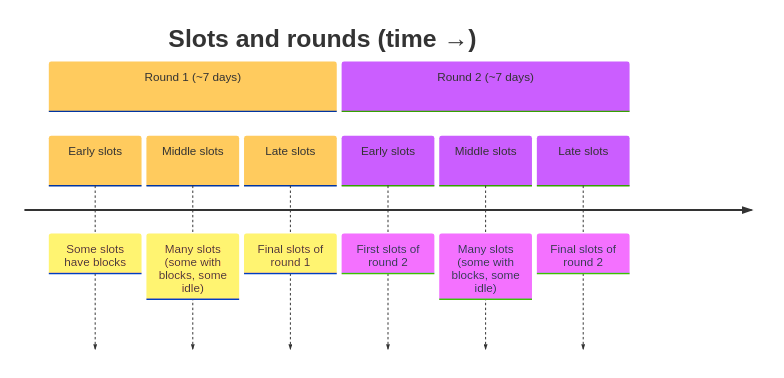
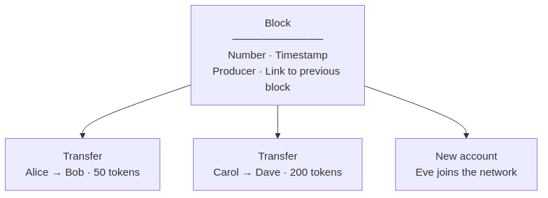
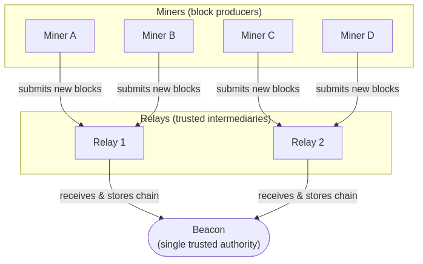
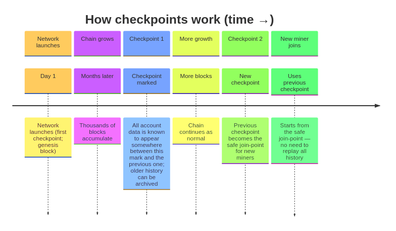
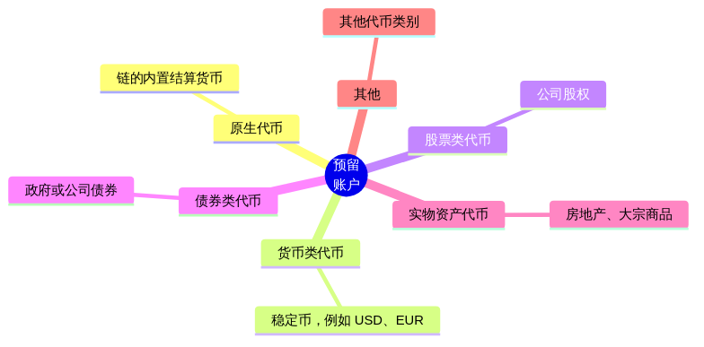
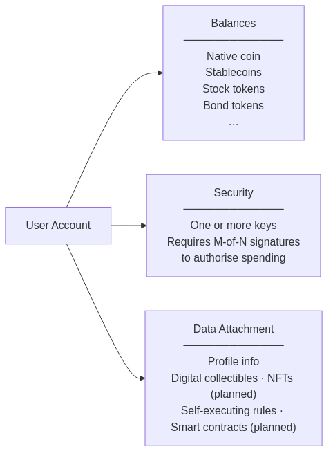

区块链将网络活动组织成固定的节奏。每 5 秒 为一个「拍」（称为 时隙 slot）。在每个时隙内，一名被选中的参与者可以向链上添加一批活动（即一个 区块 block）。固定数量的时隙（目前约为 7 天）组成一 轮（称为 epoch），每轮结束时选出下一轮的参与者。

| 概念 | 含义 |
|---|---|
| 拍（时隙 slot） | 5 秒的时间窗，每个时隙最多添加一个区块。 |
| 轮（epoch） | 7 天。每轮结束时按质押权重选出下一轮的区块生产者。 |
| 区块 | 经密封的一批活动：转账、账户变更等记录，并链接到前一个区块。 |
每个区块相当于一个防篡改的信封，一旦上链即不可更改。

区块可记录的活动类型
| 活动 | 说明 |
|---|---|
| 启动 | 首次搭建网络 |
| 新账户 | 注册并为新参与者注资 |
| 转账 | 在账户之间转移代币 |
| 更新账户 | 参与者更新自己的资料 |
| 续期账户 | 网络维持账户有效 |
| 关闭账户 | 网络关闭无法继续支付维护费的账户 |
三类节点共同维持网络运行，角色清晰、互不重叠，因此没有单一参与者能独自篡改链。若原始校准节点失灵，任一持有完整链的中继节点均可被指定为新的校准节点，保持连续性。

| 角色 | 职责 | 是否出块 | 是否持有完整历史 |
|---|---|---|---|
| 校准节点 | 唯一权威账本；校验一切 | 否 | 是 |
| 中继节点 | 可信网关，向记账节点分发链数据，分压校准节点 | 否 | 是 |
| 记账节点 | 被选中的参与者，打包并提交新交易区块；获得费用 | 是 | 部分 |
意义： 矿工公平竞争——每个时隙只有随机选出的矿工可以出块，当选概率与其质押量成正比，使网络既去中心化又可预期。
节点可由 AI 代理运维。设计上支持后续将传输层升级为抗量子通信。
随着链在数月、数年中增长，从创世块起长期存储所有区块成本高昂。存档点 解决这一问题：从启动日起，网络标记已确认的区块区间，这些区间的内容共同决定每个账户的当前状态。第一个存档点即网络启动；后续存档点覆盖相邻两个标记之间的区间。新参与者可从某个存档点加入，只需读取该存档点与上一存档点之间的区块，而无需重读全部历史。

| 术语 | 含义 |
|---|---|
| 快照（存档点） | 链上的一个标记，保证从该标记与上一标记之间的区块即可重建每个账户的最新状态（状态不必位于单个区块内） |
| 安全接入点 | 最新存档点之前的一个存档点，已证明稳定且被广泛认可 |
链上预留一批特殊账户用于发行和管理代币。这些账户可显示负余额（类似央行资产负债表），并可创建新的代币类型。

| 账户 | 用途 |
|---|---|
| 创世账户（账户 0） | 发行原生代币，设定初始供应 |
| 费用归集（账户 1） | 收取各账户支付的小额维护费 |
| 储备（账户 2） | 持有未分配供应 |
| 回收（账户 3） | 接收被关闭账户的余额 |
| 账户 4 及以上 | 用于货币、股票、债券、RWA 及其他代币类别 |
每种代币由各自专用的预留账户发行，发行在链上有清晰、可审计的归属。
链上的每个个人或机构拥有一个 用户账户。账户身份与密码学密钥分离：用户可更换密钥与算法而无需变更账户，为后量子安全留出升级路径。账户可持有多种代币（原生币、稳定币、权益、债券等），并可携带可扩展的个人数据附件，未来可包含数字藏品与自执行合约。

| 功能 | 当前是否支持 |
|---|---|
| 持有多种代币 | 是 |
| 多签消费（M-of-N） | 是 |
| 附加资料或自定义数据 | 是 |
| 持有数字藏品（NFT） | 规划中 |
| 自执行规则（智能合约） | 规划中 |
| 功能 | 状态 |
|---|---|
| 可预期、基于时间的出块 | 已完成 |
| 基于质押、防篡改的记账者选择 | 已完成 |
| 不可篡改的交易记录 | 已完成 |
| 多代币余额 | 已完成 |
| 小额、按使用计费 | 已完成 |
| 定期检查点以保持存储轻量 | 已完成 |
| 功能 | 状态 |
|---|---|
| 校准节点：权威账本 | 已完成 |
| 中继节点：可扩展矿工网关 | 已完成 |
| 记账节点：去中心化出块 | 已完成 |
| 矿工通过快照快速加入 | 已完成 |
安全说明： 当前网络栈侧重正确性与完整性。针对大规模滥用行为（如大规模连接洪泛或自动化探测）的高级防护尚未实现，在面向公网部署前需进一步加固。
| 功能 | 状态 |
|---|---|
| 原生代币 | 已完成 |
| 预留账户的自定义代币发行 | 已完成 |
| 用户账户注册 | 已完成 |
| 账户维护与关闭 | 已完成 |
| 数字藏品（NFT） | 规划中 |
| 自执行规则（智能合约） | 规划中 |
| 专用货币 / 股票 / 债券 / RWA 代币类别 | 规划中 |
| 功能 | 状态 |
|---|---|
| 命令行工具 | 已完成 |
| REST（HTTP）API | 已完成 |
| JavaScript / Node.js 库 | 已完成 |
| MCP（Model Context Protocol）服务端 | 已完成 |
| 实时流式 API | 规划中 |
| Web 浏览器 / 后台监测 | 规划中 |
本节从共识/网络与账户/存档点两方面概括本设计与常见区块链的差异。
| 方面 | 本设计 | 常见其他链 |
|---|---|---|
| 权威模型 | 单一 校准节点 作为权威账本；中继节点 为可信网关；记账节点 仅负责出块。任一角色无法单独篡改链。 | 常见为全节点地位平等（如比特币）或验证者既提议又验证（如多数 PoS 链）。 |
| 出块 | 仅 记账节点 添加区块；校准节点与中继节点从不出块。记账节点按时隙选举，通过中继（或可选直连校准节点）接入。 | 验证者/矿工通常以扁平或网状拓扑互连；没有「权威 + 网关」的职责分离。 |
| 可见性 | 记账节点仅持有 部分 历史（用于提议区块）；完整链保存在校准节点与中继节点。 | 全节点与验证者通常存储并验证完整链。 |
| 恢复 | 持有完整链的中继节点可在原校准节点丢失时 晋升为校准节点，在不改协议的前提下保持连续性。 | 故障转移多通过链外替换或社会共识处理，少有明确的「下一校准节点」角色。 |
| 时间与时隙 | 固定 5 秒时隙，每时隙至多一个区块；基于质押权重的 VRF 记账者选举（类 Ouroboros）。 | 可变出块时间或每轮多区块较常见；记账者选择因链而异。 |
简言之：本设计将 谁持有真相（校准节点）、谁分发（中继节点）、谁扩展（记账节点）分离，而非合并为单一验证者集合。
| 方面 | 本设计 | 常见其他链 |
|---|---|---|
| 存档点 / 同步 | 存档点 标记已确认区间；新参与者从某存档点加入，仅处理 该存档点与上一存档点之间 的区块，无需从创世重放。 | 新节点常从创世或近期「快照」同步，快照多为完整状态转储，而非链区间保证。 |
| 状态与历史 | 存档点保证账户状态可 由区间内区块重建；状态不必存在于单个区块中。 | 状态多由应用全部区块或状态库得出；「存档点 = 链区间」未必显式。 |
| 预留账户 | 固定预留账户（创世、费用归集、储备、回收及代币发行账户）角色明确；部分可为负余额作为记账手段。 | 多为单一「系统」或国库地址，或无正式预留区间；代币发行由合约或协议约定。 |
| 账户生命周期 | 显式的 注册、维护（费用）、续期、关闭；关闭账户余额进入回收账户。网络可在账户无法支付维护费时关闭账户。 | 账户多为「一次创建、永久使用」或仅由用户主动关闭；无内置维护费或网络发起的关闭。 |
| 多代币与发行 | 每账户原生 多代币 余额；每种代币由 专用预留账户（4 及以上）发行，发行在链上有明确归属。 | 多代币多通过合约或侧表实现；发行未必与固定预留账户模型绑定。 |
简言之：本设计将 存档点视为有界的链区间，用于定义状态重建与轻量同步；账户 为一等对象，具备生命周期、维护费及基于预留账户的代币发行，而非仅「地址 + 余额」或仅靠合约发行。
主链按固定时隙节奏提交，承担全局安全与可审计性，适合大额或低频的价值转移，却不适合大量小额、高频的支付（零售、游戏、批量发薪、物联网等）。提升吞吐与体验的可行路径是将高频活动卸载到另一套系统，由该系统按既定周期再写回主链。
这类系统依场景有不同称呼 —— 二层（Layer 2）运营方、结算枢纽、受监管且托管意义上的数字银行，或在已知参与方之间运行的私有链。模式相同：用户不必每笔转账都上主链，而是向实体锁定（存入或托管）余额，由其在自有账本上在内部处理转账；仅在固定间隔将汇总或净额结果锚定到主链（例如按小时、按天或按 epoch）。
| 术语 | 含义 |
|---|---|
| 锁定 / 存入 | 用户将代币在链上转入运营方托管（或代表该托管的合约），这些代币支撑其在内部系统中的余额。 |
| 内部账本 | 运营方的快速路径：数据库、许可链或其他网络，其中转账成本低、可即时完成。 |
| 定期同步 | 在约定时间，运营方向主链提交批量结算：提现、净额划转、欺诈证明或检查点承诺等 —— 而非「买一杯咖啡就上一笔主链交易」。 |
权衡（需明示）：选择参与的用户在余额提现或链上结算完成前，承担锁定余额上的交易对手与运营风险。主链获得可扩展性与更低的单笔支付成本；对该部分活动而言，对运营方（或其规则与密码学）的信任替代了「每笔都上主链」。
为何写入本设计叙事：存档点已表达「并非每次状态变化都必须在每个区块中可见」——只需区间可恢复且达成一致。链下结算延伸该思路：多数微小步骤在链下完成；主链记录开立、关闭与周期性真相（谁欠谁），在性能与「仍由单一权威账本做最终结算」之间取得合理分工。